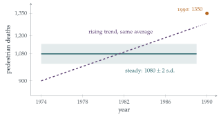

The average number of pedestrians killed annually in road accidents in Poldavia during the period 1974–1989 was \(1080\) and the average number killed annually in commercial flight accidents during the same period was \(180\). Discuss the following newspaper headlines which appeared in 1991. (The percentage figures in square brackets give a rough indication of the weight of marks attached to each discussion.)
Six Times Safer To Fly Than To Walk. 1974–1989 Figures Prove It.
Our Skies Are Safer. Only 125 People Killed In Air Accidents In 1990.
Road Carnage Increasing. 7 People Killed On Tuesday.
Alarming Rise In Pedestrian Casualties. 1350 Pedestrians Killed In Road Accidents During 1990.
The hook
Statistics is the science of learning from data, and its first lesson is that numbers do not speak for themselves. “Six times safer”, “alarming rise”, “carnage increasing”: every day, headlines turn numbers into claims, and the claims are often wrong, not because the numbers are false but because they are compared with the wrong thing, or because ordinary random variation is mistaken for a trend.
This question has no formulas in it at all, which makes it unusual for STEP. It asks you to think like a statistician: what would we need to know to justify each headline, and how much variation should we expect by chance alone? The answers use the Poisson distribution (Section 12.18), and the reasoning is the foundation of the rest of this chapter.
Before you start
If deaths occur independently and at random at a steady rate, how much should the yearly total vary? If the average is \(1080\) a year, what is a typical deviation from year to year?
Counts of independent rare events are approximately Poisson, and a Poisson count with mean \(\mu\) has variance \(\mu\) and standard deviation \(\sqrt\mu\). With \(\mu = 1080\), the standard deviation is about \(33\): yearly totals between about \(1015\) and \(1145\) would be unremarkable.
Working it through
Stage 1 “Six times safer to fly than to walk”
\(1080\) pedestrian deaths and \(180\) air deaths per year. Six times what, exactly?
The headline compares total deaths, but safety is about risk: deaths per unit of exposure. Almost everyone walks every day, while relatively few people fly, and then only occasionally. A fair comparison would use deaths per kilometre travelled, per hour of travel, or per journey, and these can give very different answers (air travel is extremely safe per kilometre, less impressively so per journey, since most air deaths happen at take-off and landing). The figures given cannot “prove” anything about relative safety. Also, “pedestrians killed in road accidents” is a narrow category; road deaths overall are much larger.
Stage 2 “Our skies are safer: only 125 killed in 1990”
Are air deaths like independent rare events? How variable would you expect the yearly total to be?
Air deaths come in clusters: a single crash may kill hundreds of people. So the yearly total depends mainly on the number of crashes, which is small, and is extremely variable from year to year. One year with \(125\) deaths, against an average of \(180\), is entirely consistent with no change at all: a single extra crash would have changed the figure completely. One year’s data cannot show a trend.
Stage 3 “Road carnage increasing: 7 killed on Tuesday”
On average, how many pedestrians are killed per day? If daily deaths are Poisson, how often would you see \(7\) or more in a day?
The average is \(\frac{1080}{365} \approx 2.96\) pedestrian deaths per day. If daily counts are Poisson with this mean, \(\mathrm{P}(\geq 7) \approx 0.031\): about \(11\) days a year would have \(7\) or more pedestrian deaths purely by chance. (And “road carnage” presumably includes drivers and passengers too, making \(7\) road deaths in a day even less remarkable.) A single day says nothing about a trend. The headline picks an extreme value out of a highly variable series, a classic error.
Stage 4 “Alarming rise: 1350 pedestrians killed in 1990”
Compare \(1350\) with the Poisson standard deviation. Is this just chance? If not, what else could explain it, and does it justify “alarming rise”?
This is the substantial part. Under a steady Poisson model, \(1350\) is \(270\) above the mean of \(1080\), about \(8\) standard deviations: it is wildly unlikely to be chance. So something has probably changed. But the headline still overreaches, in several ways:
A trend hidden by an average. The figure \(1080\) is an average over \(16\) years. If deaths rose steadily from about \(900\) in 1974 to about \(1260\) in 1989, the average would still be \(1080\), and \(1350\) in 1990 would simply continue an existing trend, not a sudden “alarming” rise (Figure 13.1.1). We need the year-by-year figures.
Exposure. Population growth, more walking, more traffic or an ageing population would all increase deaths without the roads becoming more dangerous per journey. A rate per head, or per kilometre walked, is the right measure.
Definitions. A change in how deaths are recorded or classified (for example, how long after an accident a death is counted) can produce a jump.
Over-dispersion. Real yearly counts vary more than the Poisson model suggests, because conditions (weather, economic activity) vary. The “\(8\) standard deviations” should be treated with some caution.
The rise is probably real, but whether it is alarming, and what causes it, needs more data.

Looking back
Compare like with like. Risks need a denominator: deaths per person, per kilometre or per journey.
Know the natural variation. Poisson variability, and the much larger variability of clustered events, tell us when a change is noteworthy.
An average hides a trend. A single summary number cannot describe how a quantity has changed over time.
What’s really going on
Signal and noise
Every statistical question is, at bottom, a question of separating signal (a real effect or trend) from noise (random variation). The Poisson model gives a yardstick for the noise in counts of independent events: a standard deviation of \(\sqrt\mu\). Rare events have large relative variation: a count of \(9\) varies by about \(\pm3\), a third of its size, while a count of \(10\,000\) varies by only about \(1\%\). That is why small numbers (deaths on one day, crashes in one year) are so often over-interpreted, and why cancer “clusters” in small towns usually turn out to be chance.
Regression to the mean
There is a further trap. Road-safety cameras are often installed at sites that have just had an unusually bad year. The following year, accidents fall, and the cameras get the credit. But an unusually bad year is likely to be followed by a more ordinary one anyway: this is regression to the mean, first described by Francis Galton in the 1880s. Separating the effect of a camera from regression to the mean requires comparison with similar sites that did not get cameras, the idea behind controlled experiments.
Florence Nightingale, famous as a nurse in the Crimean War, was also a pioneering statistician. Her “rose diagrams” of 1858 showed that far more soldiers were dying of preventable disease than of wounds, and persuaded the government to reform army sanitation. She insisted on rates (deaths per thousand soldiers per year) rather than raw totals, and on comparing like with like, the very points this question tests. She was the first woman elected a Fellow of the Royal Statistical Society.
The thinking skill
Before accepting a statistical claim, ask what the comparison is, what the denominator is, and how much variation would be expected by chance.
At university, statistics courses turn these questions into precise methods: hypothesis tests ask whether an observation is consistent with chance; confidence intervals say how precisely a quantity has been measured; and the design of experiments ensures that comparisons are fair.
Try this next
Poisson tails. Check that \(\mathrm{P}(X \geq 7) \approx 0.031\) for \(X\) Poisson with mean \(2.96\). How many days a year would you expect \(9\) or more pedestrian deaths?
Clustered deaths. Suppose air crashes occur as a Poisson process at \(1.2\) per year, and each kills \(150\) people. Find the mean and standard deviation of yearly air deaths. Is a year with \(125\) deaths or fewer unusual? Could a year have exactly \(125\) deaths?
A significant rise? If the 1974–1989 figures had been steady at \(1080 \pm 33\), find (using a normal approximation) the probability of \(1350\) or more in a single year.
Write a better headline. For each of the four headlines, write a headline that the data actually support.
Further reading
David Spiegelhalter, The Art of Statistics (Pelican). How to learn from data, with many examples from the news.
Tim Harford, How to Make the World Add Up (Bridge Street). Ten rules for thinking about numbers in the media.
Darrell Huff, How to Lie with Statistics (Penguin). A short classic from 1954, still relevant.